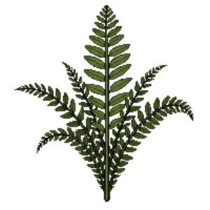

Chain Fern
Woodwardia radicans

Chain Fern is a perennial for focal point, structure, suited to full sun to partial shade and loam, acid soil or moist ground, flowering varies by climate.
| Type | Perennial |
|---|---|
| Mature height | 150 cm |
| Spread | 150 cm |
| Aspect | full sun to partial shade |
| Foliage | Evergreen |
| Hardiness | USDA 8a-10b, RHS H3 |
| Pollinator-friendly | No |
| Pet-safe | Not confirmed |
Where to use it in a border
At around 150 cm, it sits best toward the back of a border, or on its own as a focal point with room around it. Give it about 150 cm of room to spread. It is hardy across USDA zones 8a to 10b and rated H3 by the RHS, so check it suits your area before planting.
It appears in our lists of shade, acid soil, wet soil, evergreen plants.
Border Builder uses Chain Fern's height, spread, soil, bloom months and companions to place it in a full border plan for your own conditions, on iPhone and iPad.
Flowering through the year
Worth knowing
- Evergreen, so it keeps the border furnished through winter.
- It copes with ground that stays wet, which most border plants will not.
- It tolerates acid soil but dislikes shallow chalk.
- It tolerates a shaded, north-facing spot.
Good companions
Plants that share its conditions and style, chosen to complement its place in the border:
- Allegheny Spurgeto edge in front
- Alumroot 'Palace Purple'to edge in front
- Appalachian Sedgeto edge in front
- Astilbe 'Fanal'to edge in front
- Astilbe 'Visions'to edge in front
- Barrenwort 'Frohnleiten'to edge in front